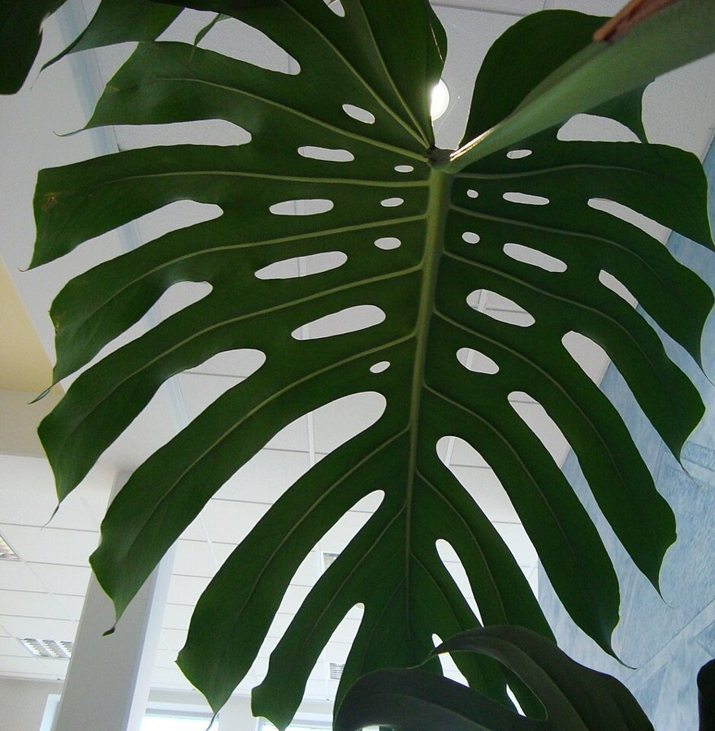
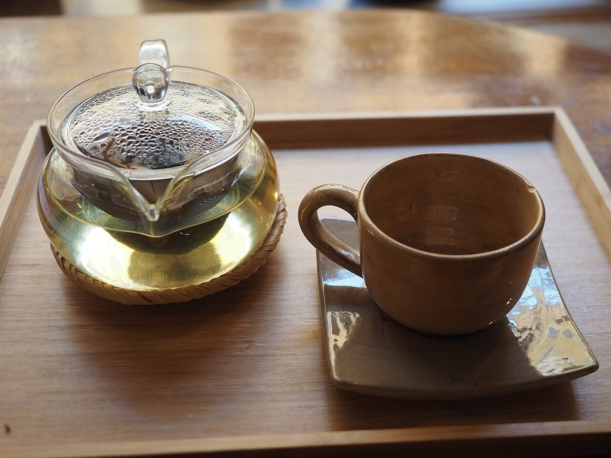

お店について
お店の基本情報
| 店名 | cinnamon |
|---|---|
| 業種 | カフェ |
| 所在地 | 〒737-0114 広島県呉市広文化町4-36 |
| 電話 | 090-3889-8551 |
| @cinnamon20240125 | |
| 営業時間 | 準備中(お問い合わせください) |
| 定休日 | 準備中(お問い合わせください) |
| スタッフ | 準備中(お問い合わせください) |
| 席数 | 準備中(お問い合わせください) |
| 設備 | 準備中(お問い合わせください) |
| 駐車場 | 準備中(お問い合わせください) |


コンセプト
お客様がお店の情報を確認しやすいよう、基本情報を整理することを想定した、制作側の案です。実際のお店の考え方とは異なる場合があります。
お知らせの確認先
最新のお知らせは、Instagramの投稿でご確認ください。
掲載写真はフリー素材のイメージです。店舗の実際の様子・商品ではありません。瀬戸内海の写真など、呉市以外や撮影地不明のものを含みます。